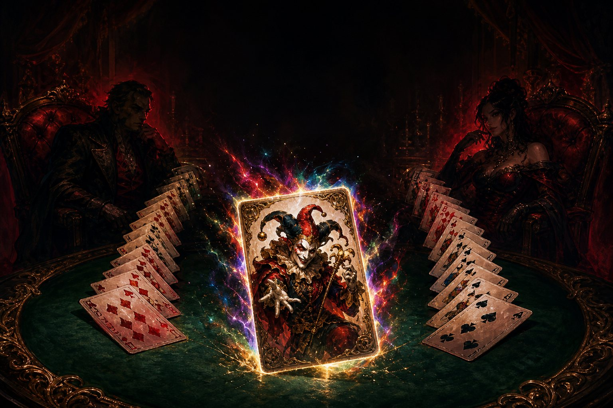
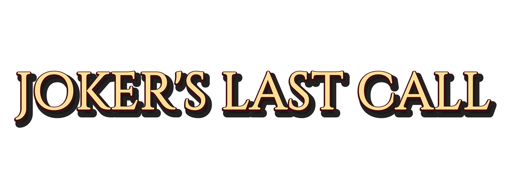
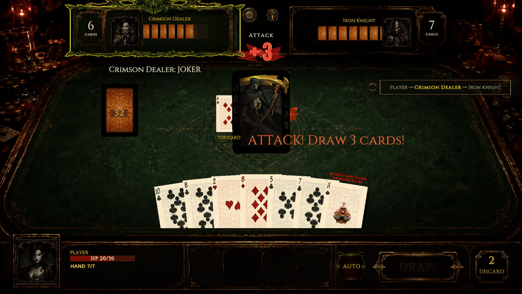
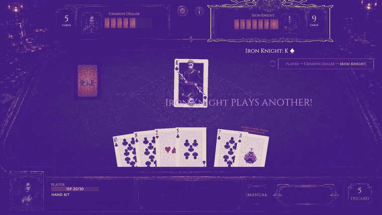
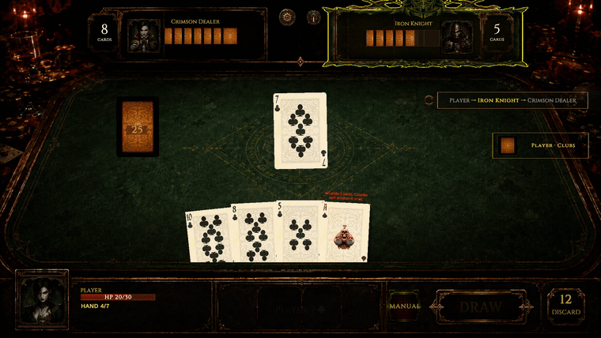
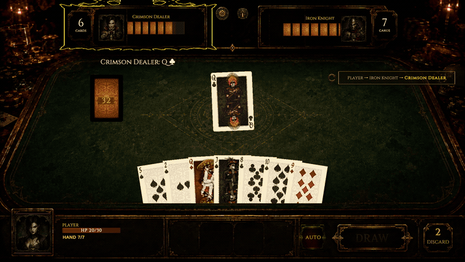

Korea's One Card. Reborn as a roguelike. 한국의 원카드, 로그라이크로 다시 태어나다.
Stack the attack · Break the chain · Beat the house
♠ The Game게임 소개
One Card is fast, aggressive, and played in Korean living rooms and army barracks — but almost nowhere else. Match rank or suit, stack draw penalties onto the next player, and watch the punishment grow until someone finally breaks the chain.
Joker's Last Call rebuilds that game as a dark casino roguelike. You sit down against two rivals at once. Every hand you win pays out in gold and relics that bend the rules — and every hand you lose brings the house closer to collecting.
원카드는 빠르고 공격적이다. 한국의 거실과 내무반에서는 누구나 알지만, 그 밖에서는 거의 알려지지 않았다. 숫자나 문양을 맞추고, 드로우 페널티를 다음 사람에게 떠넘기고, 누군가 사슬을 끊을 때까지 벌칙이 불어난다.
Joker's Last Call은 그 게임을 다크 카지노 로그라이크로 다시 만든 작품이다. 테이블에 앉으면 상대는 언제나 둘. 이기면 골드와 규칙을 비트는 유물이 쌓이고, 지면 하우스가 판돈을 걷어간다.
Attack cards don't deal damage — they build a penalty that travels around the table. Block it and it grows. Push it to the next rival and it grows again.공격 카드는 피해를 주지 않는다. 테이블을 돌며 불어나는 벌칙을 쌓을 뿐이다. 막으면 커지고, 넘기면 또 커진다.
A Joker can stop a disaster or send the whole chain back the way it came. Spend it early and the last hand is naked. Hold it too long and the house collects first.조커는 재앙을 멈추거나 체인 전체를 되돌려 보낸다. 일찍 쓰면 마지막 패가 비고, 너무 아끼면 하우스가 먼저 걷어간다.
Eighteen relics alter draws, suits, chains, defense and turn order. You carry three at a time, so every reward is also a decision about what to throw away.18종의 유물이 드로우·문양·체인·방어·턴 순서를 바꾼다. 동시에 지닐 수 있는 건 세 개뿐이라, 보상은 언제나 무엇을 버릴지에 대한 결정이 된다.
Every fight is three-way. Rivals attack each other, exploit weak hands, and punish whoever loses control of the table. The safe move now often builds the turn that kills you.모든 전투는 3자 대결이다. 적들은 서로를 공격하고, 약한 패를 노리고, 테이블을 놓친 쪽을 응징한다. 지금 안전한 수가 다음 턴의 사형 선고가 된다.
Climb a branching casino map through shops, events and elites, then face boss pairs who each break a different rule — and cover for each other while doing it.상점·이벤트·엘리트로 갈라지는 카지노 맵을 오르면, 서로 다른 규칙을 부수며 엄호까지 해주는 보스 2인조가 기다린다.
♥ Trailer트레일러
♦ In Motion플레이 영상
Each clip is available as a looping MP4 and a GIF. The full set is in the press kit below. 각 장면은 루프 MP4와 GIF로 받을 수 있다. 전체 세트는 아래 프레스킷에 들어 있다.

A Joker doesn't just beat the card under it — it becomes an attack on the spot. Three cards for the black-and-white one, five for the colour. Only another Joker answers it. Nobody had one.조커는 그냥 센 카드가 아니라 그 자리에서 공격이 된다. 흑백 조커는 3장, 컬러 조커는 5장. 받아칠 수 있는 건 또 다른 조커뿐이고, 없으면 그대로 가져간다.



♣ Screenshots스크린샷
Click any image for the full 1920×1080 PNG. All three interface languages are included in the press kit. 이미지를 클릭하면 1920×1080 원본 PNG로 연결된다. 3개 인터페이스 언어 전부 프레스킷에 포함되어 있다.
♠ The Developer개발자
Byoungyoung Gu is a practising ophthalmologist in South Korea and the CEO of Gana Holdings Co., Ltd. He has been shipping software since 2016, written around clinic hours.
His earlier apps came out of the day job: a home eye-check tool built on the anterior segment photography principles he uses at work, and a breathing exercise app made with a psychiatrist's review. Then the games started — a Three Kingdoms strategy title, a zombie survival game, and in April 2026 a mobile release, Three Kingdoms: Storm of War.
Joker's Last Call is his first game on Steam. It began with a card game he grew up playing, and a question nobody had answered: why has nobody built a roguelike out of One Card?
구병영은 한국에서 진료 중인 안과 전문의이자 주식회사 가나홀딩스 대표다. 2016년부터 진료 시간 사이사이에 소프트웨어를 만들어 왔다.
초기 앱들은 본업에서 나왔다. 전안부 촬영 원리를 응용한 홈 안과 검사 도구, 정신과 전문의 감수를 받은 심호흡 앱 같은 것들이다. 그 뒤로 게임이 시작됐다. 삼국지 전략 게임, 좀비 서바이벌, 그리고 2026년 4월 모바일로 출시한 Three Kingdoms: Storm of War.
Joker's Last Call은 그의 첫 스팀 게임이다. 어릴 때부터 하던 카드 게임에서 시작됐고, 아무도 답하지 않은 질문에서 출발했다. 왜 아직 아무도 원카드로 로그라이크를 만들지 않았을까?
♣ Press & Creators
Assets are free to use in coverage. Monetisation is permitted on every platform. Review keys are available on request — write to the address at the bottom of this page. 모든 자료는 보도·영상에 자유롭게 사용할 수 있다. 모든 플랫폼에서 수익 창출이 허용된다. 리뷰 키는 요청 시 제공하며, 페이지 하단 주소로 연락하면 된다.
♠ Fact Sheet팩트 시트
| Title타이틀 | Joker's Last Call |
|---|---|
| Developer개발 | Byoungyoung Gu |
| Publisher퍼블리셔 | Gana Holdings Co., Ltd. — Seoul, South Korea대한민국 |
| Release date출시일 | November 5, 2026 · 22:00 KST |
| Launch price가격 | USD 9.99 — 10% launch discount (USD 8.99) for the first week출시 첫 주 10% 할인 (USD 8.99) |
| Platform플랫폼 | Steam (Windows 10/11, 64-bit) |
| Steam App ID스팀 App ID | 4962850 |
| Genre장르 | Roguelike · Card game · Strategy로그라이크 · 카드 게임 · 전략 |
| Players플레이 인원 | Single-player싱글플레이 전용 |
| Run length런 길이 | 20–25 minutes20~25분 |
| Languages지원 언어 | English, Korean, Simplified Chinese — interface only (no voice-over)영어, 한국어, 중국어 간체 — 인터페이스만 (음성 없음) |
| Demo데모 | Playable demo during Steam Next Fest, October 19–26, 2026스팀 넥스트 페스트 기간 (2026년 10월 19~26일) 플레이 가능 |
| Engine엔진 | Unity 6 (URP) |
| Team size팀 규모 | One developer1인 개발 |
| Minimum spec최소 사양 | Windows 10 64-bit · Intel Core i3 or equivalent또는 동급 · 4 GB RAM · DirectX 11, 2 GB VRAM · 2 GB storage저장공간 |
| Content rating콘텐츠 등급 | Stylised fantasy violence in a dark casino setting. No realistic gore, no explicit content.다크 카지노 배경의 양식화된 판타지 폭력 표현. 사실적 유혈이나 선정적 요소 없음. |
♥ Descriptions소개문
Hit copy and paste it as-is. Cut it down if you need to — no attribution required. 복사 버튼을 누르면 그대로 붙여넣을 수 있다. 수정 없이 써도 되고, 잘라 써도 된다.
Korea's One Card, reborn as a dark casino roguelike: outplay two rivals at once and reverse a deadly attack chain with a single Joker.한국의 원카드를 다크 카지노 로그라이크로 옮겼다. 상대는 언제나 둘, 쌓여버린 공격 체인은 조커 한 장으로 되돌린다.
Joker's Last Call is a single-player roguelike built on One Card, a fast Korean card game rarely seen outside Korea. Every fight puts you against two rivals at once. Stack attack chains, break them with a Joker, and build each run around three of eighteen rule-bending relics on the way to the house's final table.Joker's Last Call은 한국의 원카드를 바탕에 둔 싱글 로그라이크다. 모든 전투가 1 대 2로 붙고, 공격 카드는 피해를 주는 대신 체인을 쌓아 다음 사람에게 떠넘긴다. 규칙을 비트는 유물 18종 중 세 개만 지닌 채 카지노 맵을 올라 하우스의 마지막 테이블까지 가야 한다.
Joker's Last Call is a single-player card roguelike built on One Card — a fast, aggressive card game played across Korea and almost nowhere else. Match rank or suit, stack draw penalties onto the next player, and watch the punishment grow until someone finally breaks the chain. Every battle is a three-way contest: one player against two rivals who also attack each other, exploit weak hands, and punish whoever loses control of the table. Attack cards never deal damage directly. They build a chain that travels around the table, growing with each block, until the player who cannot answer draws the whole thing. A Joker can stop that chain or send it back the way it came — but you only carry so many, and the final hand is always the dangerous one. Between fights you climb a branching casino map through shops, events and elite opponents, choosing from eighteen relics that alter draws, suits, chains, defense and turn order. You can hold three at a time, so every reward is a decision about what to give up. Built in Unity 6 by a practising ophthalmologist, releasing on Steam on November 5, 2026, with a playable demo during Steam Next Fest in October.Joker's Last Call은 한국의 원카드를 바탕으로 만든 싱글플레이 카드 로그라이크다. 숫자나 문양을 맞춰 내고, 공격 카드를 겹쳐 다음 사람에게 떠넘기고, 누군가 사슬을 끊을 때까지 벌칙이 불어난다. 모든 전투는 1 대 2다. 두 상대는 서로도 공격하고, 약해진 패를 노리고, 테이블을 놓친 쪽을 응징한다. 공격 카드는 직접 피해를 주지 않는다. 테이블을 돌며 막을 때마다 커지다가, 답을 못 낸 사람이 쌓인 만큼을 전부 받는다. 조커는 그 사슬을 멈추거나 왔던 방향으로 되돌린다. 다만 손에 쥘 수 있는 조커는 한정돼 있고, 위험한 건 언제나 마지막 한 장이다. 전투 사이에는 상점·이벤트·엘리트로 갈라지는 카지노 맵을 오른다. 드로우·문양·체인·방어·턴 순서를 바꾸는 유물 18종 중 동시에 지닐 수 있는 건 세 개뿐이라, 보상은 늘 무엇을 버릴지에 대한 결정이 된다. 현직 안과 전문의가 Unity 6으로 개발했다. 2026년 11월 5일 스팀 출시, 10월 스팀 넥스트 페스트에서 데모를 플레이할 수 있다.
♣ Permissions & Disclosure사용 허가 및 고지
You are free to record, stream and monetise Joker's Last Call on any platform — Let's Plays, reviews, full playthroughs, edited content, sponsored videos. No permission is required and no revenue share is claimed. A link to the Steam page is appreciated but not required.
This permission applies to the demo and the full release, and it does not expire.
Joker's Last Call은 모든 플랫폼에서 자유롭게 녹화·방송·수익 창출할 수 있다. 렛츠플레이, 리뷰, 전체 플레이, 편집 영상, 협찬 영상 모두 포함된다. 별도 허가가 필요 없고 수익 배분도 요구하지 않는다. 스팀 페이지 링크는 감사하지만 의무는 아니다.
이 허가는 데모와 정식 버전 모두에 적용되며, 만료되지 않는다.
Every screenshot, clip, logo and piece of key art on this page may be used in coverage of the game without asking. Please don't alter the logo or key art beyond cropping and scaling.
이 페이지의 모든 스크린샷·클립·로고·키아트는 게임 관련 보도에 별도 문의 없이 사용할 수 있다. 로고와 키아트는 크롭·크기 조정 외의 변형은 삼가 주기 바란다.
Some visual assets — boss portraits in particular — were created with the assistance of generative AI tools, then refined and finalised by the developer. This is disclosed on the Steam store page as well, and is stated here so that outlets with an AI-content policy can make an informed decision before covering the game.
일부 시각 자산, 특히 보스 초상화는 생성형 AI 도구의 도움을 받아 제작한 뒤 개발자가 다듬어 완성했다. 스팀 스토어 페이지에도 동일하게 고지되어 있으며, AI 콘텐츠 관련 정책이 있는 매체가 사전에 판단할 수 있도록 여기에도 명시한다.
♠ Contact & Links연락처 및 링크
Write from a channel or outlet address and include a link to your channel or publication. Keys usually go out the same day. 채널이나 매체 주소로 연락하면서 채널·매체 링크를 함께 보내주면 된다. 대개 같은 날 발송한다.